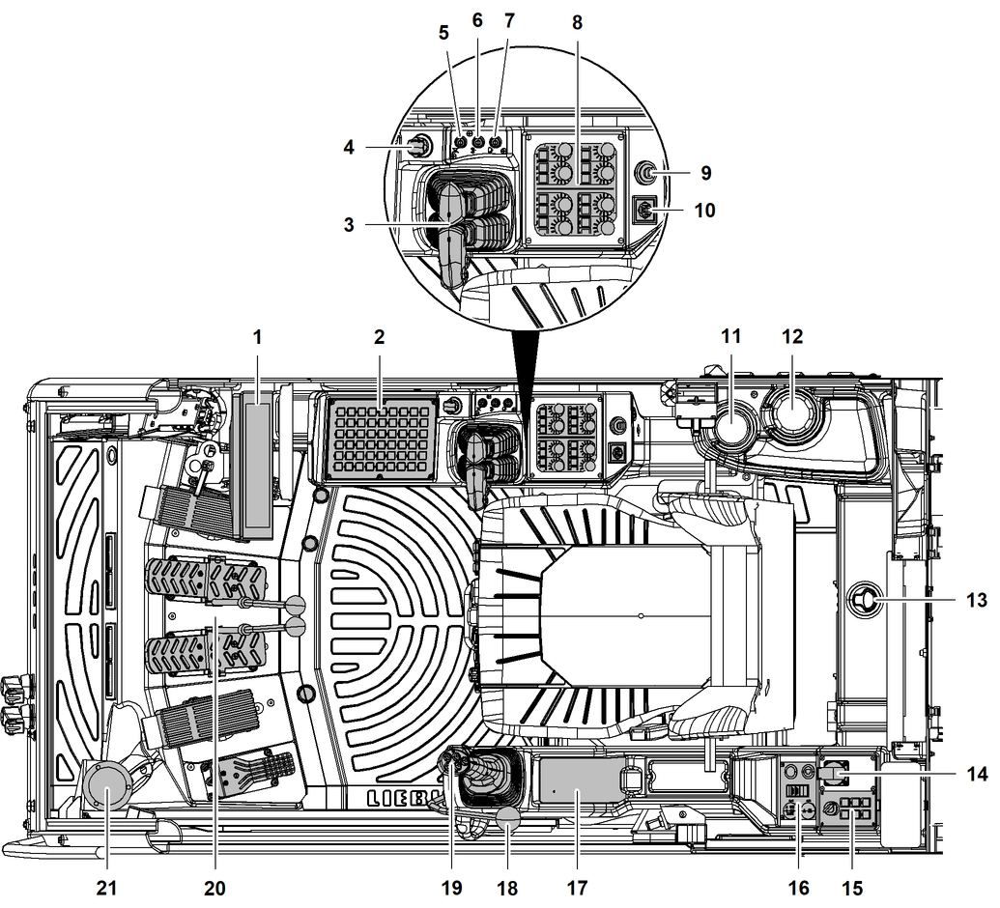

Kabine

Fig. 680: Steuerstand
Bildschirm | |
Steuerpult X23 | |
Rechter Bedienhebel (Ausführung gemäß Maschinenkonfiguration) | |
Not-Halt | |
Taste Radio stummschalten | |
Taste Funk (Ausführung gemäß Maschinenkonfiguration) | |
Taste Einmalwischen | |
Steuerpulte/Ablagefach (Ausführung gemäß Maschinenkonfiguration) | |
Zündschloss | |
Taste Seitenspiegel | |
Getränkehalter | |
Getränkehalter | |
Ablagefach für Betriebsanleitung | |
Steckdose* (230 V) | |
Steuerpult X12 | |
Multibox | |
Induktive Ladestation* für Mobiltelefon | |
Betriebsfreigabehebel | |
Linker Bedienhebel (Ausführung gemäß Maschinenkonfiguration) | |
Pedale | |
Dosenlibelle |

Zündschloss
– | Position P: Parken |
– | Position 0: Aus |
– | Position 1: Steuerung |
– | Position 2: Motor |
Die mechanischen Zähler sind zusätzlich, zu den Betriebsstunden-Anzeigen auf der Bildschirmseite Betriebsstunden am Bildschirm, installiert. Sollten die Betriebsstunden-Anzeigen nicht verfügbar sein, können die mechanischen Zähler für die Ermittlung der Betriebsstunden herangezogen werden.
Die Bestückung der Kabine ist abhängig von der Konfiguration der Maschine. Die Position der einzelnen Bedienelemente kann aufgrund der diversen Einbau- und Verstellmöglichkeiten variieren und ist individuell einstellbar.